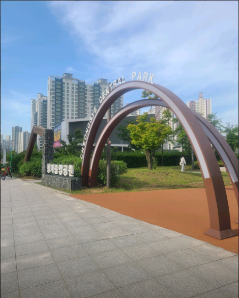
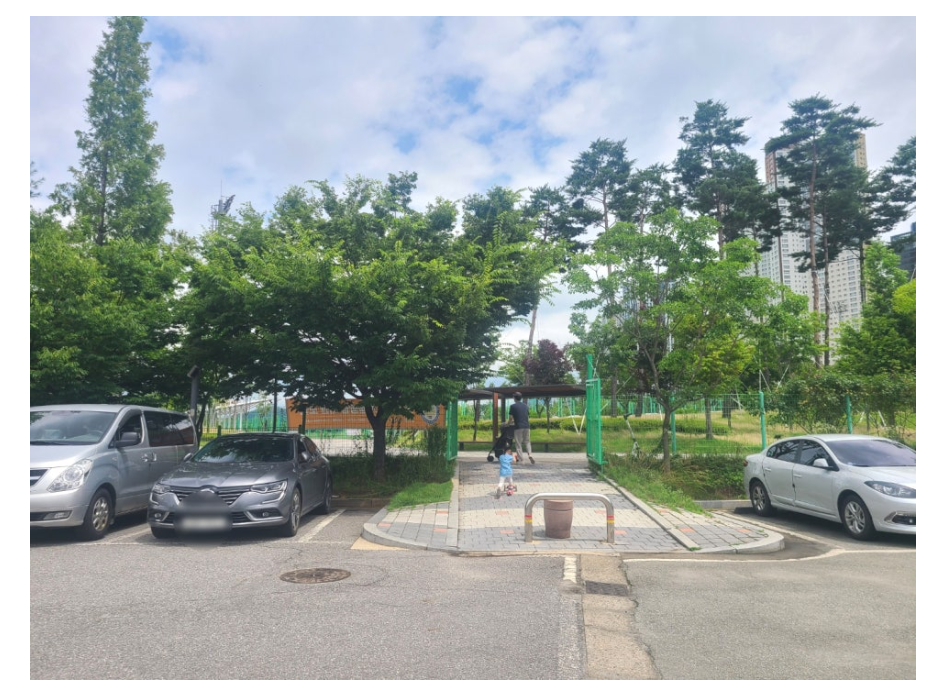

청계중앙공원은 동탄역에서 도보 21분 거리에 있어,
매우 가까운 곳은 아니지만 매우 큰 공원으로 근처에는 여러 학교와 아파트가 있는 공원이다.

동탄여울공원
동탄여울공원은 동탄역에서 도보로 무려 55분이나 걸리는 공원이지만,동탄여울공원 또한 공원 크기가 큰 편에 속한다.
한 도로의 공사가 완료되면(동탄광역환승로) 동탄역에서 도보로 15분만에 갈 수 있을거라 추측된다.

Website UI Copyright by X-Cube Train Team | 웹사이트 UI 저작권은 X-Cube 철도 팀에게 있습니다.
기여자 : 사람0_0 (saram_16781)